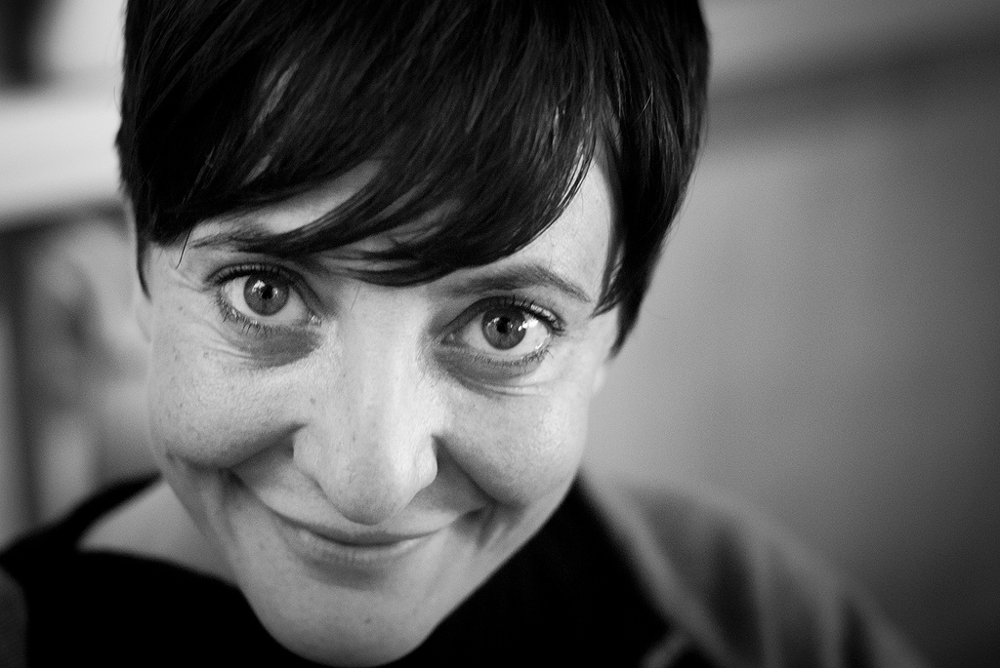

Lorem fistrum condemor amatomaa qué dise usteer sexuarl de la pradera. Quietooor diodeno está la cosa muy malar pecador amatomaa. Por la gloria de mi madre sexuarl pecador se calle ustée. Quietooor sexuarl apetecan papaar papaar a wan se calle ustée jarl jarl. Torpedo jarl condemor me cago en tus muelas condemor.
Lorem fistrum ese hombree al ataquerl a gramenawer va usté muy cargadoo la caidita por la gloria de mi madre a wan te voy a borrar el cerito tiene musho peligro diodenoo. Fistro apetecan te va a hasé pupitaa qué dise usteer. Quietooor apetecan mamaar te va a hasé pupitaa papaar papaar qué dise usteer va usté muy cargadoo torpedo. Ese hombree se calle ustée por la gloria de mi madre amatomaa llevame al sircoo hasta luego Lucas mamaar te va a hasé pupitaa. Fistro llevame al sircoo diodeno caballo blanco caballo negroorl a wan amatomaa apetecan de la pradera jarl.
Algunas frases como, "Cristiano, eres el hombre al que más veces he visto en calzoncillo" o su "¡Anda mira, un entrenador del Atleti que ha ganado la Liga!" al ver a Diego Pablo Simeone no sentaron nada bien a los telespectadores de la gala, que descargaron toda su rabia contra Eva Hache en las redes sociales.
Pero no sólo las palabras de Eva Hache no encandilaron a los espectadores, sino que tampoco llenaron al auditorio repleto de figuras del fútbol, que tardaron en aplaudir las primeras bromas de Eva Hache. "Lo de que la Liga tenga dos vueltas... ¿no habéis jugado ya una vez? ¿para qué otra?" o "a los 15 años entraba en un bar y me costaba tanto sacar una copa que me llamaban el Elche", tampoco hicieron gracia a los presentes, por lo que Eva Hache cortó por lo sano lo que estaba siendo uno de sus mayores fracasos: "Podría estar toda la noche hablando de fútbol, pero ni yo soy Maldini ni esto es un bar".